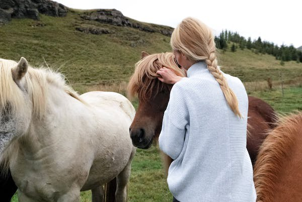
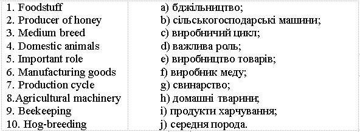
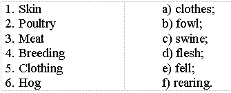
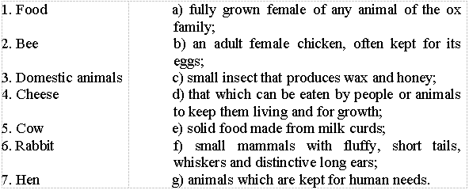

Lesson 6
UNIT 2
My specialty is techologist
BASIC LIVESTOCK
PRODUCTION

Domestic animal
Learn the active vocabulary of the Lesson and be ready to use it in your further work:
Accordingly
adv – відповідно,
такимчином;
application
n – вживання,
використання,
застосування;
beef
n – яловичина;
bee-keeping
n – бджільництво;
bristle
n – щетина;
cream
n – вершки,
крем;
cycle
n – цикл,
період;
dairy
a – молочний;
dairy
product – молочнийпродукт;
domestic
a – свійський;
down
n – пух;
draft
n – тягло,
упряж;
dual
a – подвійний;
duck
n – качка;
felln– шкура (тварини), шерсть;
flesh n – (сире) м’ясо, тіло, плоть;
food stuff – продукти харчування;
goose (pl.
geese)
– гусак, гуска, гуси;
ham n – шинка, окіст, стегно;
hen n – курка;
hog n – свиня (амер.), кабан;
hog-breeding
n – свинарство;
hog-raising
n – свинарство;
lard
n – смалець;
leather
n – шкіра (вичинена);
manufacture
n – виробництво,
виготовлення;
medium
a – середній;
medium breed – середня порода;
minor a – другорядний;
minor branch – другорядна галузь;
mutton n – баранина;
ox,
(pl.
oxen)
n – бик, віл;
producer
n – виробник;
rabbit-breeding
n – кролівництво;
range n – асортимент;
raw a – сирий, необроблений;
raw
material – сировина;
roughly
adv – грубо,
приблизно;
sheep-breeding
n – вівчарство;
subdivide
v – підрозділяти;
swine
n – свиня,свині;
turkey
n – індик;
wax n – віск.
Read and translate the text:
DOMESTIC
ANIMALS
Domestic
animals are kept for the production of human food. Besides, the skin, down and
feathers of poultry, the wool of sheep, goats and camels are used as raw
materials to produce leather, clothing, etc.
The
most important group of domestic animals is formed by the cattle. Cattle can be
roughly subdivided into draft cattle, dairy cattle, beef cattle and dual-purpose
cattle. Draft cattle (oxen, as a rule) have almost everywhere been replaced by
agricultural machinery. Dairy cattle (cows) provide dairy products (milk,
butter, cream, cheese, etc). Beef cattle are the producer of beef. Dual-purpose
cattle give us both milk and beef.
Important
sources in producing human food are also sheep breeding, hog raising,
rabbit-breeding, apiculture, and some other minor branches.
Sheep
provides not only mutton and dairy products (cheese, for example); the wool and
skin of sheep are valuable raw materials for producing clothes. There are
accordingly two main types of sheep breeding: for wool and for mutton. There is
also a medium breed: the wool-mutton breed.
The
production cycle of hogs (swine) is much shorter than that of cattle or sheep.
Hog breeding gives a vast range of foodstuffs: ham, bacon, lard, sausage, etc.
The skin of pigs and their bristles are also used in manufacturing goods.
To
poultry belong hens, geese, ducks, turkeys and some other fowls. Poultry provide
meat (flesh), eggs, down and feathers.
Rabbits
are bred for meat, and their fells find an application in producing clothing.
The
bee is the only producer of honey and wax. Bee-keeping also plays an important
role in agronomy and in medicine.
Words
Can
be roughly subdivided – приблизно можна розділити;
dual-purpose
cattle – м’ясомолочна велика рогата худоба;
have
almost everywhere been replaced –майже повністю витіснено;
manufacturing
goods –виробництво товарів;
the only – єдиний.
GRAMMAR EXERCISES
I. Answer the following questions:
1.What
are domestic animals kept for?
2.What
is used as raw materials to produce leather, clothing, etc.?
3.What
animals form the most important group of domestic animals?
4.What
dairy products are provided by dairy cattle?
5.What
are the producers of beef?
6.What
kind of cattle gives people both milk and beef?
7.What
are the important sources in producing human food?
8.What
animals provide people with mutton, dairy products and raw materials
for
producing clothes?
9.What
are the main types of sheep breeding?
10.Where
do people usually use the skin of pigs and their bristles?
11.What
are provided by poultry?
12.What
is the only producer of honey?
13.What insects play an important role in agronomy and in medicine?
II. Give Ukrainian equivalents of the following English words:

III. Group the following by parts of speech:
Noun Adjective Verb
production domestic keep
Turkey, rough, belong, dairy, hog, dual, human, poultry, medium, fowl, domestic, provide, production, minor, duck, produce, wool, sheep, find, skin, down, feather, subdivide, replace, play, give, keep.
IV. Find a common word:
1. Skin,
down and feathers, raw materials, wool.
2. Milk,
butter, dairy products, cream, cheese.
3. Ham,
food stuffs, bacon, lard, sausage.
4. Yens, geese, poultry, ducks, turkeys.
V. Arrange the following in pairs of synonyms:

VI. Fill in the blanks with the necessary words in brackets:
(Products,
poultry, cycle, cattle, are bred, draft, human food, skin, producer of honey,
medium)
1.The wool-mutton breed is a … breed. 2. The production … of hogs is shorter than that of cattle or sheep. 3.The bee is the only … and wax. 4.Domestic animals are kept for the production of …. 5.The wool and … of sheep are valuable raw materials for producing clothes. 6…. cattle are replaced by agricultural machinery. 7.Dairy cattle provide dairy … . 8.Beef … are the producer of beef. 9. … provide meat, eggs, down, and feathers. 10. Rabbits … for meat.
VII. Match the terms with their corresponding definitions:

VIII. Make up sentences with the following word-combinations:
Can be roughly subdivided; dual-purpose cattle; have almost everywhere been replaced; minor branches; manufacturing goods; the only.
IX. Make the sentences interrogative and negative:
Model:Domestic
animals are kept for the production of human food.
Questions:
1.
General.Are
domestic animals kept for the production of human food?
2.
Special.What
purpose are domestic animals kept for?
3.
Alternative..Are
domestic animals kept for the production of human food or for the production of
raw materials?
4.
Disjunctive.Domestic
animals are kept for the production of human food, are not they?
Negatives:Nowadays
domestic animals are not kept as draft animals.
1.Raw
materials are used to produce leather, clothing, etc.
2.The
most important group of domestic animals is formed by the cattle.
3.Dairy
cattle provide dairy products.
4.Beef
cattle are the producers of beef.
5.Dual-purpose cattle give us both milk and beef.
X.Make up sentences and translate them into Ukrainian:
1.Bee-keeping
also plays an important role in agronomy…
2.There
are two main types of sheep breeding: …
3.Draft
cattle have almost everywhere been …
4.The
production cycle of hogs is much shorter …
5.The
skin of pigs and their bristles …
6.Beef
cattle are ...
7.The
fells of rabbits find an application …
8.Dual-purpose
cattle give us …
9.Important
sources in producing human food are also sheep-breeding,
10.There
is also a medium breed …
11.To
poultry belong hens, geese, ducks, …
12.Rabbits
are bred …
13.Cattle
can be subdivided into draft cattle, dairy cattle, …
14.Dairy
products include milk, butter, …
15.The
skin of animals, down and feathers of poultry…
a)
both milk and beef;
b)
beef cattle and dual purpose cattle;
c)
the wool-mutton breed;
d)
turkeys and some other fowls;
e)
replaced by agricultural machinery;
f)
for meat;
g)
cream, cheese, etc.;
h)
and in medicine;
i)
in producing clothing;
j)
are used as raw materials;
k)
the producer of beef;
l)
hog-raising and some other minor Branches;
m)
for wool and for mutton;
n)
than that of cattle or sheep;
o) are used in manufacturing goods.
XI. Translate into English:
1. Свійських тварин утримують для виробництва їжі для людей. 2. Найбільш важлива група свійських тварин – це велика рогата худоба. 3. Велика рогата худоба молочного напряму забезпечує виробництво молочних продуктів. 4. Яловичину дає велика рогата худоба м’ясного напряму. 5. Вівці дають баранину та молочні продукти. 6. Вовна та шкіра овець – це цінна сировина для виробництва одягу. 7. Свинарство забезпечує велику кількість харчових продуктів. 8. Домашня птиця забезпечує виробництво м’яса, яєць та пір’я. 9. Кролів вирощують для виробництва м’яса. 10. Бджоли – єдиний виробник меду та воску.